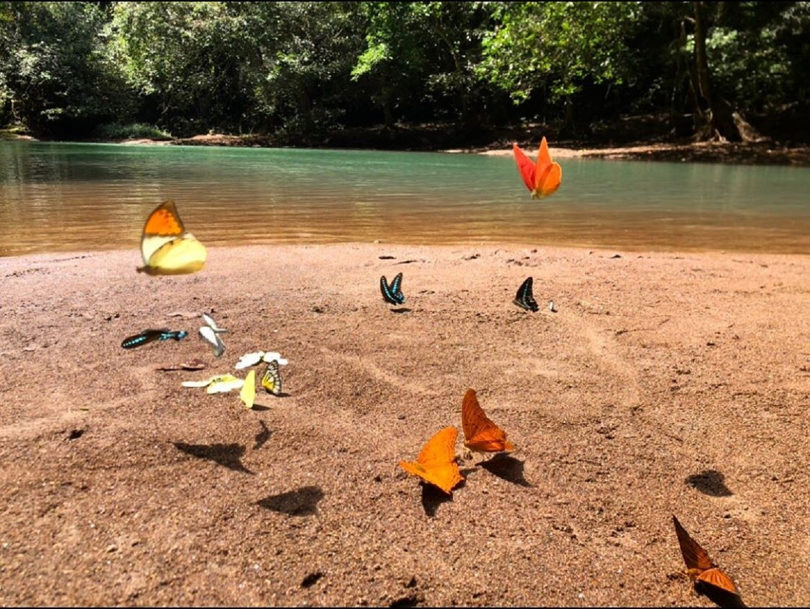

Taman Nasional Bantimurung Bulusaraung merupakan salah satu destinasi wisata alam di Sulawesi Selatan. Lembah bukit kapur dengan vegetasi tropis, air terjun, dan gua menjadi beberapa objek suguhannya. Dijuluki sebagai the kingdom of butterfly, limpahan variasi jenis kupu-kupu menjadi daya tarik utamanya.
Lokasi taman nasional ini menempati kawasan dengan luas sekitar 43.750 hektar. ASEAN Center of Biodiversity menetapkan taman nasional ini sebagai Taman Warisan ASEAN sejak 2019.
Menyambangi Kerajaan Kupu-kupu

Taman Nasional Bantimurung memiliki berbagai keunikan, namun yang paling dikenal adalah kupu-kupu. Taman nasional ini memang menonjolkan kupu-kupu sebagai daya tarik utama wisatanya.
Kawasan yang terjaga kealamiannya tersebut merupakan habitat bagi ratusan spesies kupu-kupu. Sedikitnya ada 20 jenis yang dilindungi dan beberapa spesies unik bahkan endemik Sulawesi Selatan. Dengan keistimewaannya, kawasan ini memiliki julukan the kingdom of butterfly (kerajaan kupu-kupu).
Pada kubah penangkaran Taman Nasional Bantimurung, wisatawan disuguhi dunia kupu-kupu yang meliuk mengitari. Area seluas 7000 m2 ini menyuguhkan tahapan kehidupan metamorfosis kupu-kupu. Pada display room, sebagian besar kupu-kupu diawetkan lalu dibingkai untuk dipajang.